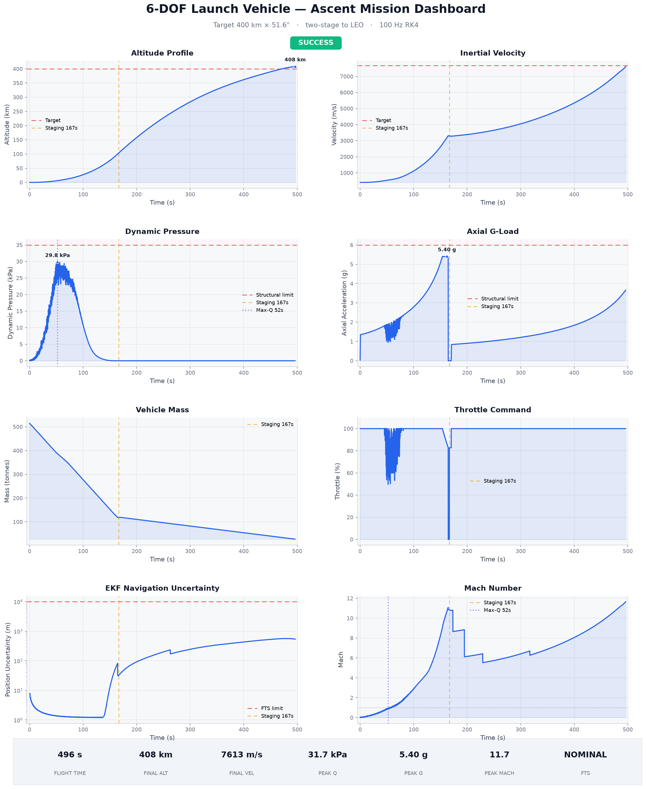
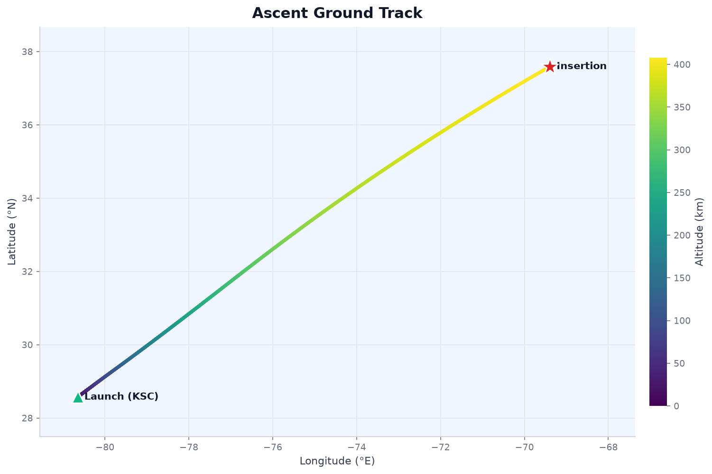

Mission at a glance
A nominal ascent targeting a 400 km × 51.6° low-Earth orbit. These figures are read live from the committed telemetry of the run visualized on this page.
3D ascent & projected orbit
The powered ascent (bright, altitude-colored) in Earth-centered inertial coordinates, rising into the projected orbit it reaches — the achieved 466 × 140 km LEO propagated one revolution (cyan). Drag to orbit the view, scroll to zoom.

From Kennedy Space Center up to insertion at ~466 km apogee, then the projected orbit (cyan) the vehicle coasts onto. Radial altitude is exaggerated ~10× so the climb and orbit stand off the 6,378 km globe; the colorbar encodes true ascent altitude.
Eight channels, one ascent
Decimated from 49,630 internal frames recorded at 100 Hz. Dashed red lines are structural / target limits; amber marks stage separation, violet marks max-Q. Hover any plot for values.
Vehicle health timeline
The safety monitor classifies every frame against structural, navigation, and propellant margins. It runs NOMINAL for most of the flight, flags WARNING as dynamic pressure and axial load peak near ~90% of their limits, and goes briefly CRITICAL during the stage-1 burnout coast (empty tank, zero thrust) just before separation. The flight-termination system never armed.
Prefer a single static image? The 8-panel
dashboard.png is generated by
examples/run_and_visualize.py.
{kind=link}
From the Cape to orbit
The sub-vehicle point projected onto the globe, colored by altitude — an eastward, high-inclination ascent over the Atlantic. Drag to spin the Earth.

Markers: ▲ launch · ★ insertion.
What it models
Every major subsystem of an orbital ascent, integrated at 100 Hz and validated against authoritative references.
6-DOF rigid-body dynamics
Quaternion attitude (scalar-last), RK4 integration at a 100 Hz fixed timestep.
WGS84 gravity + J2
Oblate-Earth geopotential with the J2 zonal harmonic from the analytic gradient.
US Standard Atmosphere 1976
Altitude-dependent density with a wind profile and discrete gusts.
Two-stage propulsion
Pressure-dependent thrust with conserved mass flow and ignition/shutdown transients.
Three-phase guidance
Vertical rise, gravity turn, and Powered Explicit Guidance (PEG) with plane steering.
PID + TVC control
Gain-scheduled attitude control driving a second-order thrust-vector actuator.
15-state error-state EKF
Position, velocity, attitude, and accel/gyro-bias estimation with GPS, baro, star-tracker and ground-range aiding.
Safety systems
Boundary enforcement, live health monitoring, and an autonomous flight-termination system.
Structural dynamics
Live flex-body bending modes stabilised by a frequency-scheduled notch filter, plus propellant slosh.
Monte Carlo
Parallel dispersion campaigns with an experimental SLURM HPC backend.
Quick start
Install, run the ascent, and regenerate every visualization on this page.
# clone & install
git clone https://github.com/rmednitzer/6dof-ascent-sim
cd 6dof-ascent-sim
pip install -e ".[dev]"
# run the full ascent (writes telemetry to output/)
python -m sim.main
# dashboard + ground-track PNGs, then the interactive site data
python examples/run_and_visualize.py
python examples/export_web_telemetry.py # -> site/data/telemetry.json
pytest tests/ -v # run the test suiteDocumentation
Design notes, modelling assumptions, and safety analysis.
Architecture →
System design and data flow.
Assumptions →
Modelling assumptions and simplifications.
STPA analysis →
System-theoretic safety analysis.
Decision records →
Architecture Decision Records (ADRs).